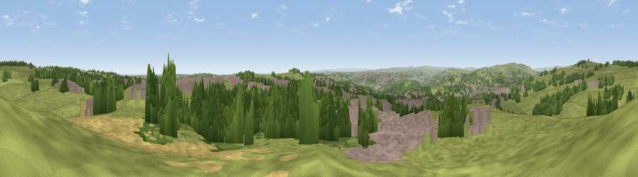

Viewpoint near Yeadon
#8967 in England · top 6% of its area beats it · near YeadonWhere it is
The exact computed spot (SE 21225 41875). Click the marker for map links.
The view, rendered

A 360° render of this exact spot computed from the terrain model, tree cover and land cover — summer colours, afternoon light, calibrated against photographs of famous viewpoints. Real trees, hedges and buildings will differ in detail.
The panorama
Grey silhouette: terrain skyline in each direction (720 bearings, Earth curvature and refraction included). Dashed green: skyline with trees (+15 m) and buildings (+8 m) as obstacles. Blue strip: how far the ground is visible on each bearing.
Where the view opens
Wedge length = distance to the farthest visible ground on that bearing (vegetation-aware). Rings at 10, 25 and 50 km.
What fills the view
49% grassland · 23% woodland · 23% built-up · 3% cropland · 2% water
Angular shares of the visible panorama (visual magnitude), not map area. Landscape diversity 0.52 (0–1 Shannon).
Key numbers
More beautiful places nearby
The staircase of upgrades: each row has a higher view potential than everything closer. Driving times are estimates from straight-line distance, calibrated against real road routing — check an actual route before setting out.
| Place | Direction | Drive | Score |
|---|---|---|---|
| Rawdon Billing | SSE · 2 km | ~5 min | 73.0 |
| Viewpoint near Otley | NNW · 3 km | ~6 min | 77.5 |
| Viewpoint near East Witton | N · 44 km | ~64 min | 77.8 |
| Hood Hill | NE · 49 km | ~70 min | 79.6 |
| Viewpoint near Thirlby | NE · 51 km | ~72 min | 81.5 |
| White Brow | WSW · 62 km | ~85 min | 82.9 |
| Beacon Hill | NNE · 63 km | ~86 min | 84.7 |
| Carlton Bank | NNE · 68 km | ~91 min | 85.1 |
53.87265, -1.67868 · source: screening · position refined by local search. Computed location — check access rights before visiting.